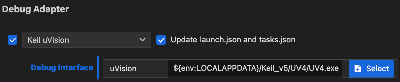

Configuration
Configure the extension
Press Ctrl+, (Windows and Linux) or Cmd+, (macOS) or go to  at
the bottom of the Activity Bar and select Settings. Then, select CMSIS Solution to change the extension
settings. The available settings are:
at
the bottom of the Activity Bar and select Settings. Then, select CMSIS Solution to change the extension
settings. The available settings are:
| Setting | Description |
|---|---|
| Actions | Set run and debug configurations for your solutions and projects. |
| Download Packs | CMSIS-Toolbox downloads required software packs using cpackget during setup and project build. This option enables the option --packs for cbuild. |
| Exclude | Configure a glob pattern for excluding files and folders in searches for csolution files. |
| Experimental Features | Use the checkbox to enable experimental features. |
| Generate Clang Setup | Use the checkbox to automatically generate the required setup (.clangd file and .vscode/settings.json) for the active solution context. For Arm Compiler 6, include pre-defined macros in the .clangd file. |
| Output Directory | Enter an output directory prefix for 'outdir' and 'tmpdir' and relocated build information files (experimental). |
| Use Web Services | Use the checkbox to enable web services to obtain information about devices, boards, and examples. If enabled, information from the internet and locally installed packs is used. If disabled, only information from installed packs is used. |
Configure a solution
The Configure Solution view opens automatically, if:
- Your solution has a
select-compiler:node, but nocompiler:node is set in thecsolution.ymlfile, or - You are working with a reference application that requires the configuration of a software layer.

-
Click Next to display the different options available.
-
You can indicate where the layers should be copied to in the Board-Layer, Shield-Layer, and Socket-Layer fields. Click Default to reset the paths to their default values. If there are no compatible layers, errors display.
-
If no compiler is set for the reference application, Select Compiler displays under the layers selection and shows the compilers available in your environment. Select a compiler. For example, AC6 or GCC.
-
If you are working with another solution type, only Select Compiler displays. Select a compiler.
-
Click OK.
For reference applications only, a Board.clayer.yml file, a Shield.clayer.yml file, or a Socket.clayer.yml file, along
with other files that make up the layer, are added in the folders that you selected. The files are available from the
Explorer view. The .clayer.yml files come from the CMSIS-Pack. Layers are automatically added in the csolution.yml
file of your solution under target-types: variables: for the active target.
For all solution types, the compiler is added with the compiler: key in the csolution.yml file.
Note
- Not all Board Support Packs (BSPs) have board layers.
- Not all layers are compatible with the connections that your reference application requires.
- The CMSIS-Packs which contain reference applications and layers generally provide an
Overview.mdfile where the connections are detailed.
Configure run and debug
In VS Code, you can integrate external tools via a tasks.json file. The debug configuration is managed via the
launch.json file. Both files are generated automatically based on your *.csolution.yml file:

When creating a Target Set in the Manage Solution view and selecting a
Debug Adapter, the information is stored in the target-set: node in the *.csolution.yml file (refer to the
CMSIS-Toolbox user's guide for
details on target-set).
When you save the target set, the CMSIS Solution extension calls cbuild setup that generates the
*.cbuild-run.yml file which contains the run and debug description of your solution. Using template files for the
various debug adapters from the Debug Adapter Registry and
taking the user inputs into account, the CMSIS Solution extension then generates the launch.json and tasks.json
files.
Debug adapter support
Keil Studio support various debug adapters and and GDB server implementations from different vendors:
- Most of the debug adapters (including ST-Link) are served by pyOCD using the Arm CMSIS Debugger extension.
- Segger J-Link Server is supported.
- Arm Debugger is supported.
- Running on Arm FVPs is possible.
- Arm Keil µVision is supported (only on Windows).
Use debug adapters
If you are using a third-party debug adapter, make sure that the latest drivers are installed on your machine and that
the debug adapters are running the latest firmware. Set the PATH variable correctly.
| Debug Adapter | Notes |
|---|---|
| Arm ULINKplus | Make sure that the V2.x.x firmware is installed. |
| Infineon KitProg3 | Make sure that the latest firmware is installed. |
| Microchip PICKit Basic | Use the Python utility pycmsisdapswitcher to switch the firmware to a CMSIS-DAP v2 implementation. |
| Nuvoton NuLink | Make sure that the latest firmware is installed. |
| NXP MCU-Link | Make sure that the latest firmware is installed. |
| Raspberrry Pi Debugprobe | Make sure that the latest firmware is installed. |
| SEGGER J-Link | For J-Link support, visit J-Link/J-Trace Downloads. Set the PATH variable to the bin directory of the installation. |
| STMicroelectronics ST-Link | For ST-LINK/V2 and ST-LINK/V2-1 support on Windows, download the USB driver here: STSW-LINK009. |
In the CMSIS view, open the Manage Solution dialog and go to the Debug Adapter section. Select one of the debug adapters. Once selected, the following JSON files are created automatically:
- In the
launch.jsonfile,attachandlaunchconfigurations are added that let you attach the debug adapter to an already running GDB instance (for example when you have issued aload and runbefore) or launch a new debug session. - In the
tasks.jsonfile, the tasksCMSIS Erase,CMSIS Load, andCMSIS Runare created.
Note
If you wish to preserve manual modification to the JSON files, uncheck "Update launch.json and tasks.json" in the Debug Adapter for ... section.
Selecting a specific debug adapter
Todo
Explain how to select a probe in case multiple are connected.
pyOCD
In the Manage Solution dialog, select the one of the debug adapters named xyz@pyOCD:
- Set the maximum clock speed.
- Select the debug protocol (
SWDorJTAG).

JLink Server
In the Manage Solution dialog:
- Select the JLink Server debug adapter.
- Set the maximum clock speed.
- Select the debug protocol (
SWDorJTAG).

Arm Debugger
You can use the Arm Debugger with Keil Studio.
Prerequisites
Before you can launch a debug session using Arm Debugger, you need to:
- Install the Arm Debugger VS Code extension.
- Add the Arm Debugger to your
vcpkg-configuration.jsonfile, for example:
"arm:debuggers/arm/armdbg": "6.6.0"
Setup for Arm Debugger
In the Manage Solution dialog, select the one of the debug adapters named xyz@Arm-Debugger.

Arm FVPs
In the Manage Solution dialog:
- Select the Arm-FVP debug adapter
- Select the model you wish to use
- Point to your configuration file
- If you wish to set a simulation limit, add this in the Misc box:

Keil uVision
In the Manage Solution dialog:
- Select the Keil uVision debug adapter.
- Set the path to the
UV4.exefile (the default is%LOCALAPPDATA%\Keil_v5\UV4\UV4.exe). - This setting is saved in the
*.csolution.ymlfile.

Attention
This only works on a Windows PC.
Changing the default for the current workspace
If you wish to change the default path to µVision for your current workspace, you need to create the following entry
in your .vscode/settings.json file:
{
"cmsis-csolution.debug-adapters": {
"Keil uVision": {
"uv4": "/path/to/UV4.exe"
}
}
}
Changing the default for a user
If you wish to set the µVision path for your user, open the global settings.json file:
- Press Ctrl/Cmd + Shift + p and type
settings. - Select Preferences: Open User Settings (JSON).. This opens the global
%APPDATA%\Code\User\settings.jsonfile. - Enter the path as shown above and save the file.
Enhancing the debug experience
To ensure the best debug experience with Arm Compiler for Embedded, make sure that your CMSIS solution files contain the following.
csolution.yml
In the *.csolution.yml file, insert the following block in - target-types\- type section:
target-set:
- set:
debugger:
name: # set to name of your debug adapter
Insert the following before the - projects section:
misc:
- for-compiler: AC6
C-CPP:
- -gdwarf-5
ASM:
- -gdwarf-5
cproject.yml
In the *.cproject.yml file, add at the end:
output:
type:
- elf
- hex
- map